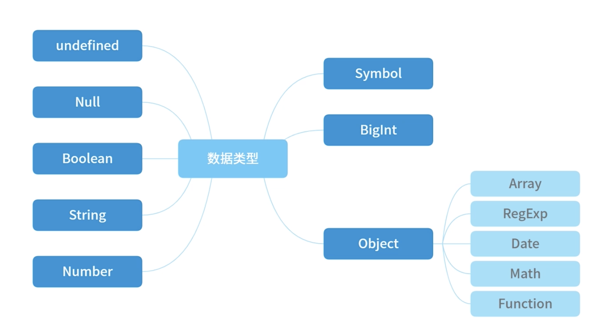

JS基础，从概念、检测方法、转换方法讲解js数据类型。
概念

基础类型和引用类型
基础类型：存储在栈内存中，被引用或拷贝时，会创建一个完全相等的变量
引用类型：存储在堆内存中，存储的是地址，多个引用指向同一个地址，这里涉及一个“共享”的概念
let a = {
name: 'lee',
age: 18
}
let b = a;
console.log(a.name);
b.name = 'son';
console.log(a.name);
console.log(b.name);
let a = {
name: 'Julia',
age: 20
}
function change(o) { // 函数传参的对象，传递的是对象在堆中的地址
o.age = 24; // 确实改变了o的属性值
o = {
name: 'Kath',
age: 30
}
return o; // 但是此处又把o变成了另一个内存地址，并存入数据，没有return，则返回一个undefined
}
let b = change(a);
console.log(b.age);
console.log(a.age);
检测
typeof：可以判断基本数据类型（null除外），但是引用数据类型中，除了function类型以外，其他的无法判断;
instanceof：可以准确判断复杂引用数据类型，但是不能准确判断基础数据类型；
Object.prototype.toString：可以准确判断，但是返回格式是[object Xxx];
typeof 1 // 'number'
typeof '1' // 'string'
typeof undefined // 'undefined'
typeof true // 'boolean'
typeof Symbol() // 'symbol'
typeof null // 'object',js历史悠久的bug，建议用===null判断
typeof [] // 'object'
typeof {} // 'object'
typeof console // 'object'
typeof console.log // 'function'
let Car = function(){}
let benz = new Car()
benz instanceof Car // true
let car = new String('Mercedes Benz')
car instanceof String // true
let str = 'Covid-9' // str只是一个以string为数据类型的值，但并不属于String对象的实例
str instanceof String // false，可以使用原型链判断
Object.prototype.toString({}) // '[object Object]'
Object.prototype.toString.call({}) // 结果同上加上call也ok
Object.prototype.toString.call(1) // '[object Number]'
Object.prototype.toString.call('1') // '[object String]'
Object.prototype.toString.call(true) // '[object Boolean]'
Object.prototype.toString.call(function(){}) // '[object Function]'
Object.prototype.toString.call(null) // '[object Null]'
Object.prototype.toString.call(undefined) // '[object Undefined]'
Object.prototype.toString.call(/123/g) // '[object RegExp]'
Object.prototype.toString.call(new Date()) // '[object Date]'
Object.prototype.toString.call([]) // '[object Array]'
Object.prototype.toString.call(document) // '[object HTMLDocument]'
Object.prototype.toString.call(window) // '[object Window]'
数据类型检测通用方法
function getType(obj) {
let type = typeof obj;
if (type !== 'object') {
return type;
}
return Object.prototype.toString.call(obj).replace(/^\[object (\S+)\]$/, '$1');
// 注意正则中间有个空格
}
数据类型的转换
强制类型转换：Number()、parseInt()、parseFloat()、toString()、String()、Boolean()
'123' == 123 //
'' == null
'' == 0
[] == 0
[] == ''
[] == ![]
null == undefined // true
Number(null) // 0
Number('') // 0
parseInt('') // NaN
{} + 10
Number()方法的强制转换规则
- 布尔值：true和false分别被转换成1和0
- 数字：返回自身
- null：返回0
- undefined：返回NaN
- 字符串：
- 如果字符串中只包含数字，则将其转换为十进制
- 如果字符串中包含有效的浮点格式，将其转换为浮点数值
- 如果是空字符串，将其转换为0
- 如果不是以上格式的字符串，均返回NaN
- Symbol：抛出错误
- 对象，并且部署了[Symbol.toPrimitive]：那么调用此方法，否则调用对象的valueOf()方法，然后根据前端的规则转换返回值，如果返回的是NaN则调用对象的toString()方法再次转换
Number(true) // 1
Number(false) // 0
Number('0111') // 111
Number(null) // 0
Number('') // 0
Number('1a') // NaN
Number('-0X11') // -17
Number('0X11') // 17
Boolean()方法的强制转换规则
- undefined、null、false、’‘、0(包括+0、-0)、NaN转换出来是false，其他都是true
Boolean(0) // false
Boolean(null) // false
Boolean(undefined) // false
Boolean(NaN) // false
Boolean(1) // true
Boolean(13) // true
Boolean(12) // true
Boolean([]) // true
Boolean({}) // true
隐式类型转换
- 逻辑运算符：&&、
||、！ - 运算符：+、-、*、/
- 关系操作符：>、<、<=、>=
- 相等运算符：==
- if/while 条件
’==’ 隐式类型转换
- 如果类型相同无需进行转换
- 如果其中一个操作值是undefined或者null，那么另外一个操作值必须为null或者undefined才会返回true，否则都返回false
- 如果其中一个为Symbol类型那么返回false
- 两个操作值如果都为string和number类型那么将会将字符串转换为number
- 如果一个操作值是boolean那么转换为number
- 如果一个操作值为object且另一方为string、number或者symbol，就会把object转换为原始类型（调用object.valueOf或者toString方法进行转换）再进行判断
null == undefined // true 规则2
null == 0 // false 规则2
'' == null // false 规则2
'' == 0 // // true 规则4
'123' == 123 // true 规则4
0 == false
1 == true
var a = {
value: 0,
valueOf: function() {
this.value++;
return this.value;
}
}
// 注意这里a又可以等于1、2、3
console.log(a == 1 && a == 2 && a == 3); // true f规则 Object隐式转换
// 注意执行过3遍之后，再执行a==3或者之前的数字就是false，因为value已经加上去了，这里需要注意一下
’+’ 隐式类型转换
’+’操作符，不仅可以用作数字相加，还可以用作字符串拼接
- 如果其中有一个是字符串，另外一个是undefined、null或布尔型，则调用toString()方法进行字符串拼接；如果是纯对象、数组、正则等，则默认调用对象的转换方法会存在优先级，然后再进行拼接
- 如果其中有一个是数字，另外一个是undefined、null、布尔型或数字则会将其转换成数字进行加法运算，对象的情况还是参考上一条
- 如果其中一个是字符串、一个是数字，则按照字符串规则进行拼接
1 + 2 // 3 常规情况
'1' + '2' // '3' 常规情况
// 特殊情况
'1' + undefined // '1undefined' 规则1，undefined转换为字符串
'1' + null // '1null' 规则1，null转换为字符串
'1' + true // '1true' 规则1，true转换为字符串
'1' + 1n // '11' 比较特殊字符串和BigInt相加，BigInt转换为字符串
1 + undefined // NaN 规则2，undefined转换为数字相加NaN
1 + null // 1 规则2，null转换为0
1 + true // 2 规则2，true转换为1
1 + 1n // 错误，不能把BigInt和Number类型直接混合相加
'1' + 3 // '13'，规则3，字符串拼接
Object的转换规则
- 如果部署了Symbol.toPrimitive方法优先调用再返回
- 调用valueOf()，如果转换为基础类型则返回
- 调用toString()，如果转换为基础类型则返回
- 如果都没有返回基础类型会报错
var obj = {
value: 1,
valueOf() {
return 2;
},
toString() {
return '3';
},
[Symbol.toPrimitive]() {
return 4;
}
}
console.log(obj + 1); // 输出5
// 因为有Symbol.toPrimitive，就优先执行这个；如果Symbol.toPrimitive这段代码删除，则执行valueOf打印结果为3；
// 如果valueOf也去掉，则调用toString返回'31'（字符串拼接）
// 再看两个特殊的case：
10 + {}
// "10[object Object]", 注意: {}会默认调用valueOf是{}，不是基础类型继续转换，调用toString，
// 返回结果是"[object Object]"，于是和10进行'+'运算，按照字符拼接规则来，参考'+'的规则C
[1,2,undefined,4,5] + 10
// "1,2,,4,5,10"，注意[1,2,undefined,4,5]会默认先调用valueOf结果还是这个数组，不是基础数据类型继续转换，
// 也还是调用toString，返回"1,2,,4,5",然后在和10进行运算，还是按照字符拼接规则，参考'+'的第3条规则